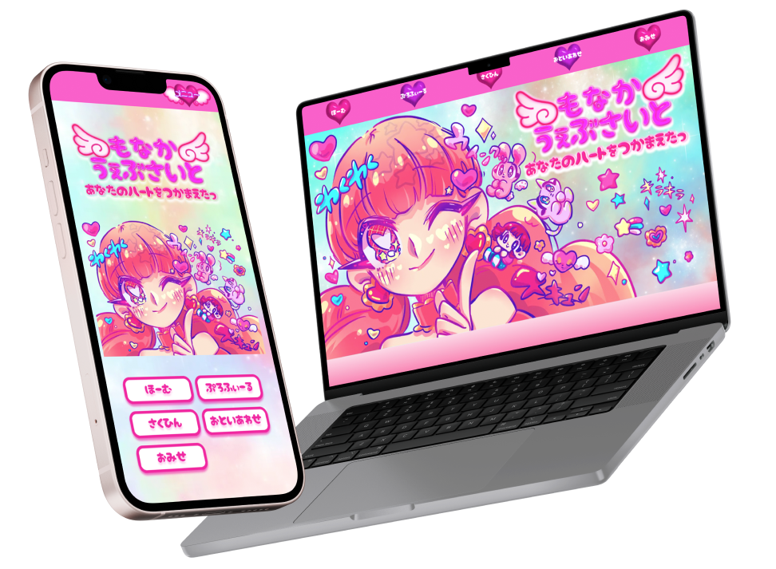
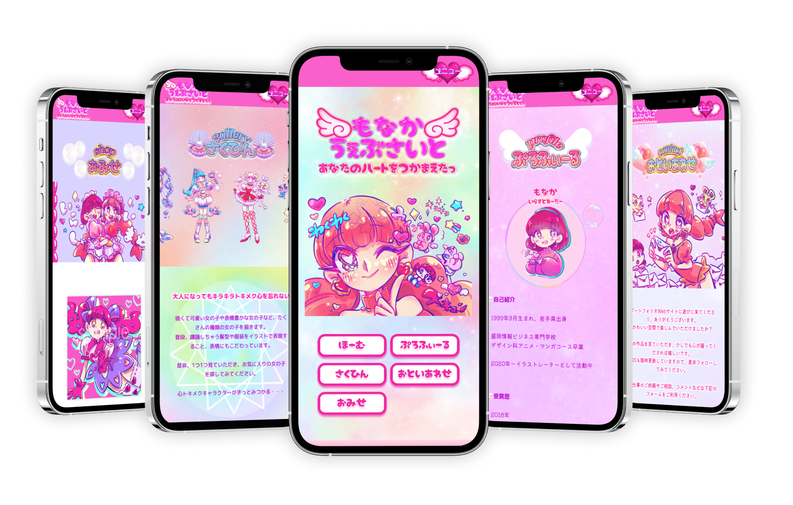

もなか様 official web site
URL : https://monakano-illust.com
- クライアント
- もなか(イラストレーター)
- 制作期間
- 1ヶ月半
- 担当範囲
- 企画/デザイン/コーディング
- 使用ツール
- Figma/Photoshop/Illustrator/VSCode
SNS中心に活動されているフリーランスのイラストレーターもなか様のオフィシャルサイトを制作させていただきました。 コンセプトのキラキラときめく世界観を出しつつ、作品や実績などユーザー目線での見やすさも重視しています。 作品をつくる上でのこだわりや想いも載せることで、クライアントの人柄をも感じられるデザインを目指しています。
現状課題
情報の分散
イラスト制作以外にもハンドメイドの作品を販売されており、幅広いWebサービスを利用されているが、どのサイトで何を販売しているのか分かりづらい。
ターゲット
個人・企業
イラストレーターやハンドメイド作家に仕事を依頼したい方。
情報設計
- ユーザーニーズを捉えたコンテンツ作り
-
ユーザーにとって有益な情報や求めている内容の分析し、ニーズを捉えたコンテンツ作りを意識しました。
イラストなど作品だけではなく、クライアントの強みやサービスも訴求ポイントと考え、情報を整理しながら構成を組んでいます。
- 導線を意識したサイト設計
- コンテンツの整理は、色やフォントでコントロールしました。特にイラストなど作品を掲載する部分は、シンプルなレイアウトでストレスなく見れるよう文章は少なく、背景色は作品が映えるよう白にしました。 さらに、各ページの配下にはお問い合わせ遷移の内部リンクを接続してユーザーが次へのアクションなど直感的に行える設計にしました。
デザインのポイント
- CVに繋げるコンテンツデザイン
- ファーストビューでオリジナルキャラクターのイラストを全面に出しインパクトが出るように意識しました。背景は、カラフルで輝きがありつつ、少し濁りのあるグラデーションを差し込み、立体的で幻想的な空間を表現しています。 またオリジナルロゴを制作させていただき、ユーザーがイラストとサイト名の情報を直感的に取り入れられる工夫をしました。
- 世界観に共感してもらえるような仕掛け作り
- 全ページの構成や配色に統一感を持たせつつ、ステッキで魔法をかけたような切り替えのある仕掛けを作り、ユーザーが世界観を体験できる遊びを加えました。またスライドショーを用いて、ファッションショーを意識したアニメーションを加えてワクワク共感してもらえるようなデザインにしました。
- 使用カラー
制作の進行管理
- こまめな報連相
- 打ち合わせ前には、事前に打ち合わせで進めたい内容をnotionにまとめて共有し、不安なく参加いただけるよう意識しました。進捗があれば頻繁に連絡をとり、懸念事項がないか確認することで、認識相互を無くしました。
- 議事録の共有
-
毎回打ち合わせ時に議事録を取り、決定事項を明確にまとめて共有することで、認識のズレ無く、お互いに意思決定プロセスを振り返りながら進めることが出来ました。
特にクライアントへ依頼するタスクの詳細や優先順位の整理、期日の設定について、明確に明記して共有することで、先に必要な情報を優先度高くいただけ、効率よく制作に取り組めました。
notionリンク:
https://www.notion.so/4-16-2-340e4d75a49b4d938add406369965682?pvs=4
※実際に使用した資料

制作の振り返り
- 良かった点
- 打ち合わせをする上で、クライアント様のSNSでの発信内容やサービスなど事前調査を入念に行いました。世界観や好きなジャンルに自分も興味を持ち、共感できたことで毎回良質なアイディアを出し合え、良好な関係を築くことができたと思います。 企画提案においては、日頃ギャラリーサイトを見る癖をつけ、サイトレビューを行っていたことで、きちんと言語化して互いに納得してた上で制作に取り組めたので目的を見失うことなく、最後までやり遂げることができました。 実装に関しては、打ち合わせ後やデザイン制作時に、コードの確認を行い、大体の工数を確認していたので納期にずれなく進めることができました。
- 改善したい点
- デザイン、実装ともに自分の引き出しがまだまだ少なく、調べることに時間を割くことが多かったです。 デザイン面は業界問わず幅広いサイトを見て目を養い、感覚ではなく言葉できちんと表現できるようにサイトレビューを行っていきます。実装面について、今回は世界観がはっきりしている案件だったので、どこまでアニメーションを加えるか、機能面と楽しさの融合の表現方法、実装の難易度調査にかなり時間をかけました。ユーザーとクライアントが求める目的の情報を整理しながら落とし込んでいくことで、優先すべき内容や表現方法も見えてくるので今後も見失わないよう取り組みます。また実装の難易度やかかる工数は、自分で手を動かして感覚を養っていきます。
- 今後に向けて
- たくさんのギャラリーサイトのデザインや実装を見て論理的に説明できるように、情報のインプットとサイトレビューなどアウトプットの積み重ねを行っていき、納得できるデザインを作りあげます。良いサイトを作るためには、クライアントに興味をもって共感する力、さらに競合やマーケット調査と分析力が必要だと感じます。感覚で進めるのではなく、必ず裏付けをもって自分の作品を増やしていき、顧客に寄り添えるデザイナーになります。
- ブログ
- 【デジハリ卒制】未経験からのWEBデザイン挑戦
~備忘録の軌跡~
https://note.com/micaco_a/n/n01ac113f602f